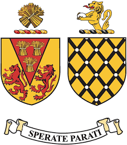
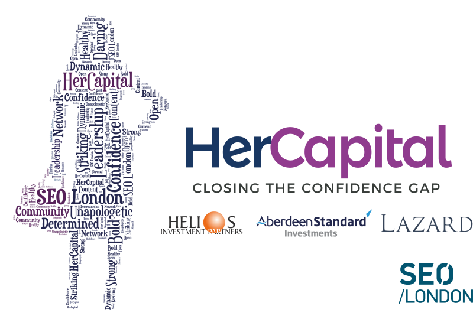
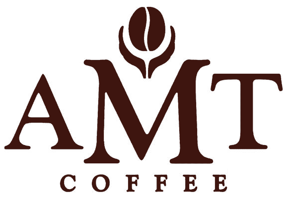
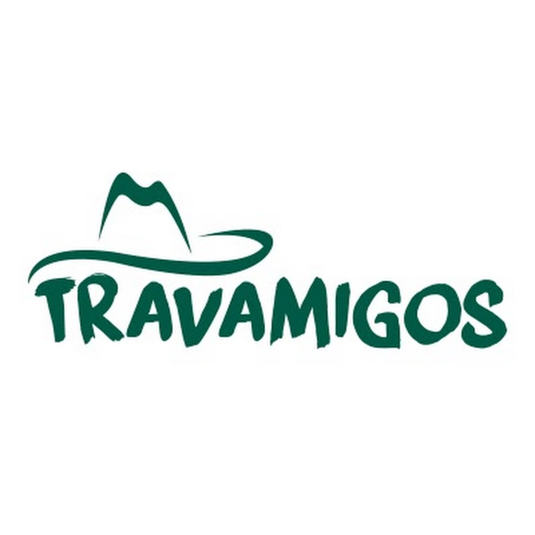
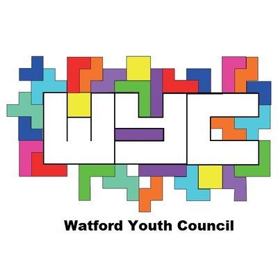

Pin-Wen Wang
About Me
I would like to work abroad in the future. To learn more, visit the Portfolio page.
Education
Loughborough University
Currently studying International Business at Loughborough University. It is a four-year sandwich course, with a placement opportunity in the third year. Expected to graduate in 2021.
Watford Grammar School for Girls
Completed her studies here in 2017, including Sixth Form.Work Experience
HerCapital Associate, SEO London, London
Worked in a team to organise a cyclothon fundraising event for the charity A21, raising over £400. Utilised interpersonal and networking skills during discussions with 56 HerCapital colleagues at professional development workshops and on social media.
University Business Challenge, Sheffield
Demonstrated strong leadership and time management by contributing in decision-making under pressure, especially for production amount and marketing expenses. Worked in a team in delivering a confident elevator pitch. Succeeded to the semi-finals and awarded 13th place.
Barista, AMT Coffee, Watford
Managed alongside A Levels, developing time management skills. Communicated with customers and ensured excellent customer service. Displayed reliable mathematical skills during cash up after a day of trading.
Voluntary Work
Travamigos Limited, Nottingham
Engaged and communicated with leaders of an SME company. Stimulated ways of improving their business idea, hence showing initiative and problem-solving.
Action Nursery, Loughborough University
Dedicated time to young children aged 4 months to 4 years. Communicated through creative ideas in order to effectively engage with the children.
Youth Council, Watford
Generated innovative ideas for group projects in order to raise awareness for issues in the local community. Created and posted a video related to mental health on social media.
UK Tzu-Chi Foundation, London
Prepared and served hot meals to the homeless, which was aided by my enthusiasm and willingness to help. Assisted in fundraised towards good causes, demonstrating my hard-working personality and ability to work as a team.